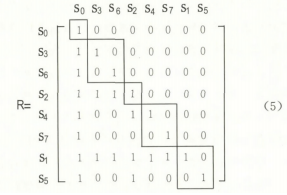
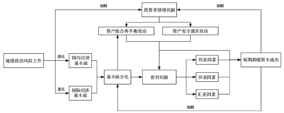
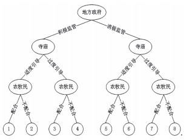
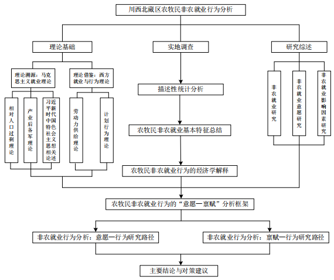

|
Lei Long | 龙磊 I am a PhD student at School of Economics, Sichuan University, China, advised by Prof. Xuebin Chen (陈学彬). My main research interests include monetary theory and text analysis. I have participated in the National Natural Science Foundation of China 72371178. Email / |

|
Research (* denotes equal contribution)I'm interested in Fintech, AI4Finance. |
|  |
基于Logit—ISM模型的川西北藏区农牧民非农就业影响因素研究——来自DC县315户贫困农户的调查数据
Jianfeng Chai, Lei Long |
|  |
地缘政治风险与中国短期跨境资本流动：理论机制与实证分析
Xuebin Chen, Lei Long |
|  |
川甘青毗邻涉藏地区生态治理路径优化研究——基于地方政府、寺庙、农牧民的三方动态博弈视角
Jianfeng Chai, Lei Long |
|  |
Study on the Off-farm Employment Behavior of Farmers and Herdsmen in the Tibetan Area of Northwest Sichuan
Lei Long |